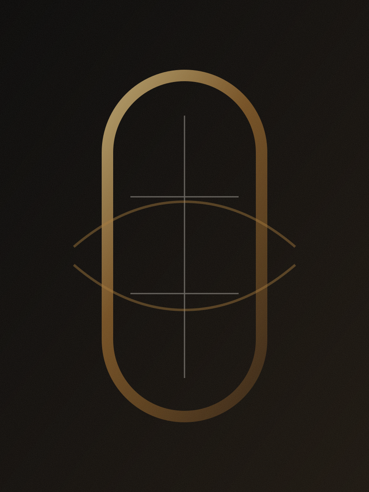
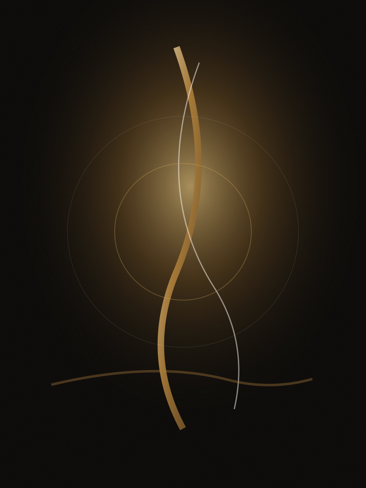
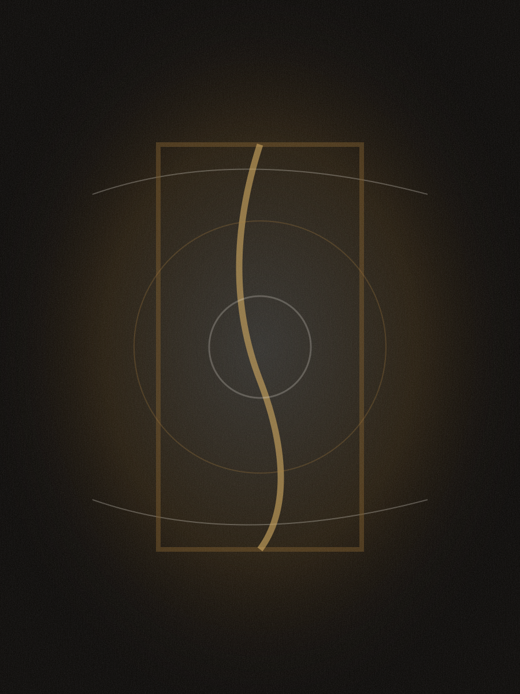

01 / BelieveinGOD
BelieveinGOD Collection / B.I.G Art Collections
A refined digital gallery by Izoduwa Precious, shaped for curators, collectors, museums, galleries, and international institutions seeking work with spiritual gravity and cultural memory.

Spiritual abstraction
Edo ancestral memory
Museum-caliber presentation
Private collector access
The collection
The collection considers faith as architecture: shadow, silence, restraint, bronze light, and the invisible inheritance carried through names, families, land, and prayer. Every work is positioned for slow viewing, serious acquisition, curatorial review, and institutional dialogue.
Selected works
Each artwork preview is intentionally restrained, allowing the collector to focus on presence, tone, material suggestion, and spiritual composition.

01 / BelieveinGOD
02 / BelieveinGOD

03 / BelieveinGOD
Artist statement
B.I.G Art Collections is built around a disciplined spiritual language: deep black, ivory quiet, weathered bronze, and gold that appears only when it has earned its place. The BelieveinGOD Collection treats faith as atmosphere rather than decoration.
Izoduwa Precious approaches the image as a site of remembrance. The work carries Nigerian and Edo sensibilities into an international gallery context, inviting a slower relationship between viewer, object, silence, ancestry, and belief.
Collector readiness
Confidential digital previews for collectors, curators, gallery directors, and art advisors.
Clear pathways for availability, commissions, collection placement, and long-term stewardship.
Professional language and presentation suitable for museums, biennials, and cultural programs.
Private inquiries
For acquisition, gallery representation, institutional projects, curatorial research, or private commissions, contact the studio with your name, organization, and area of interest.